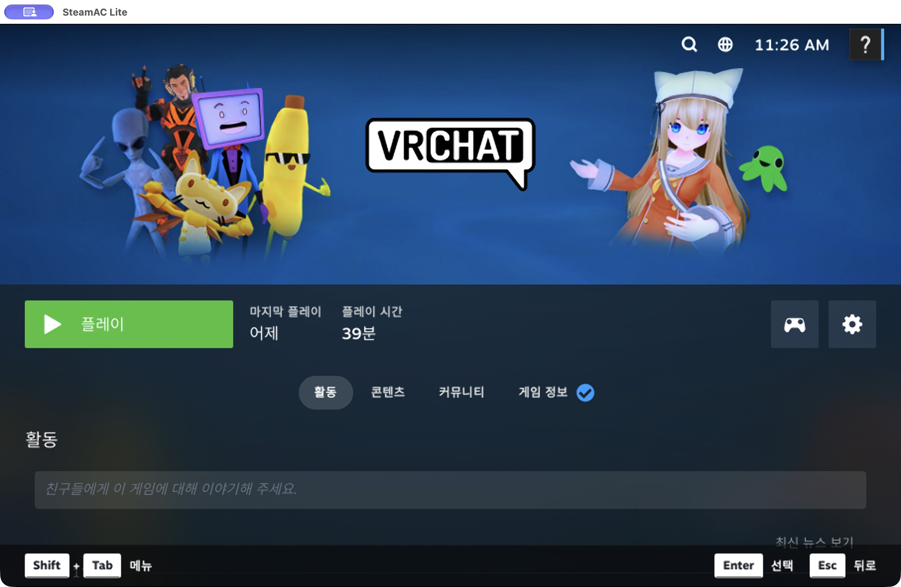
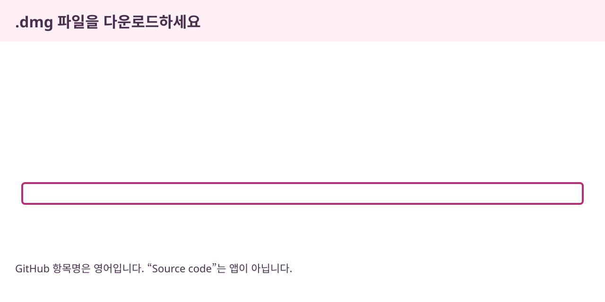
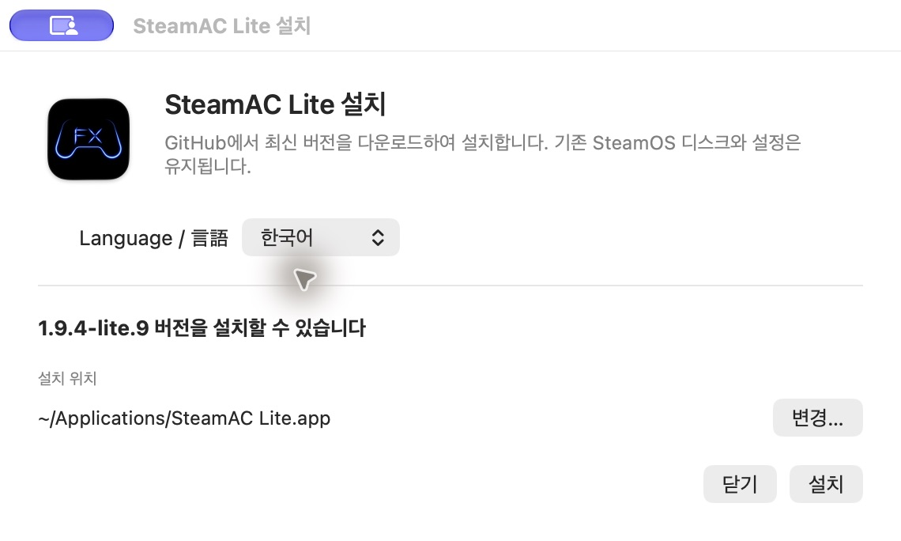
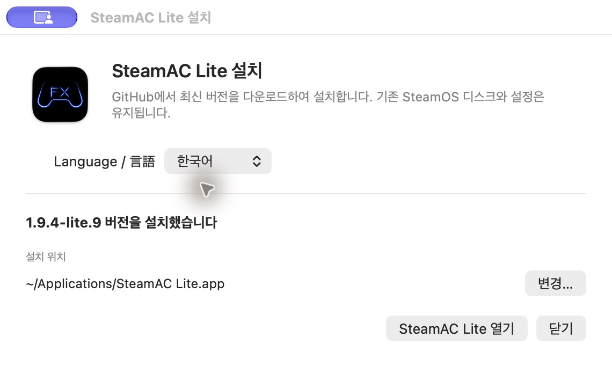
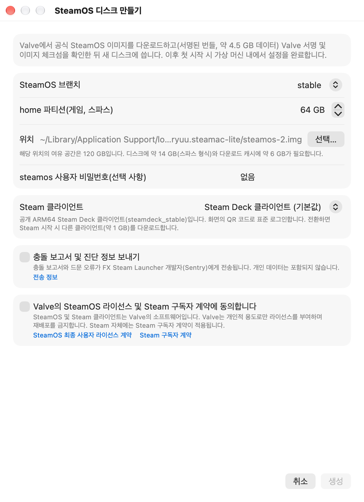
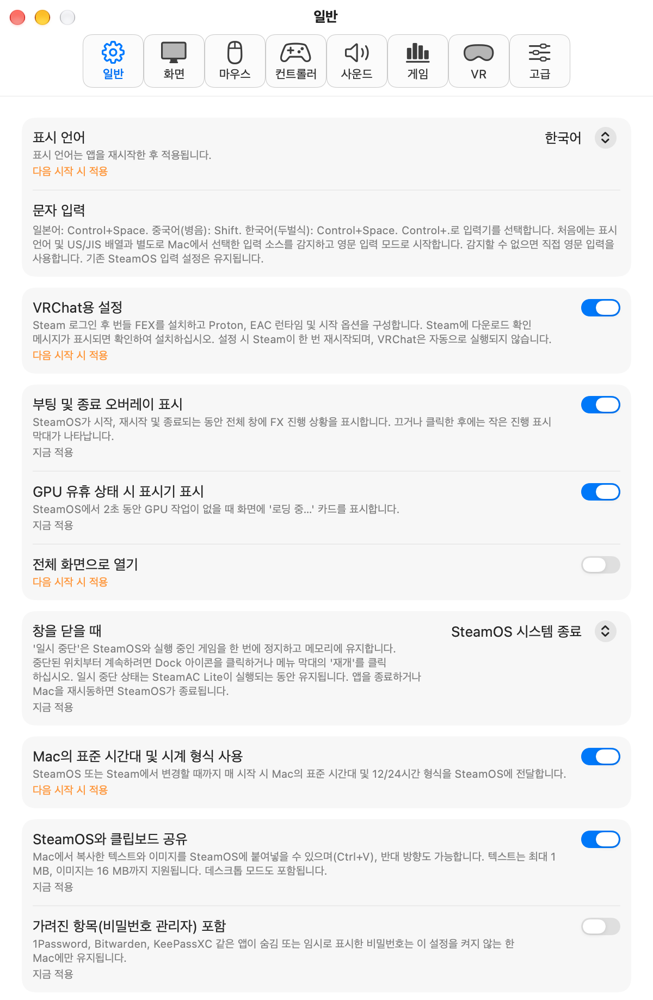
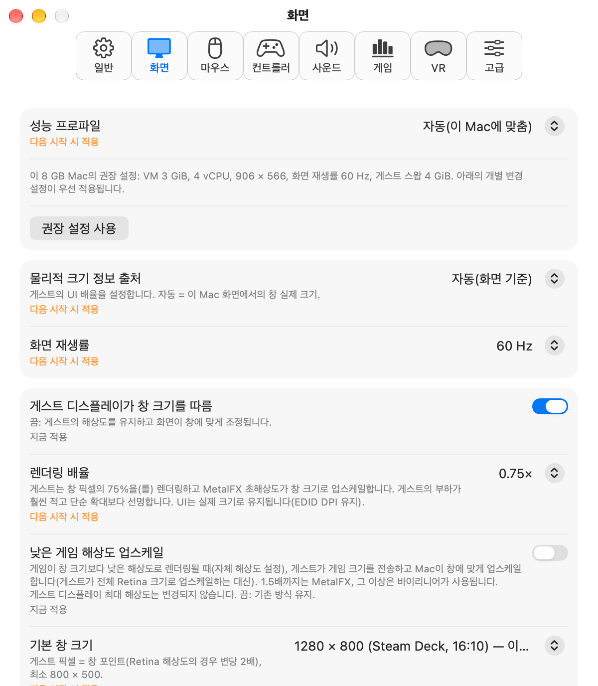

다운로드 및 초기 설정
steamac Lite설치 가이드
steamac Lite 다운로드부터 VRChat용 설정까지 화면 사진과 함께 안내합니다.

사진 확대 ↗시작하기 전에
준비 사항
- Mac
- Apple Silicon(M1 이상)
macOS 15.5 이상 · RAM 8 GB 이상 - 저장 공간
- 초기 설정에 약 20 GB
게임과 스왑용 여유 공간 별도 - 인터넷 및 계정
- SteamOS와 게임 다운로드용 인터넷
본인의 Steam 계정
Intel Mac은 지원하지 않습니다. steamac Lite는 Mac의 가상 머신에서 SteamOS를 실행하는 앱입니다. 8 GB용 스왑을 처음 만들 때는 Mac과 SteamOS 디스크 양쪽에 각각 8 GiB 이상의 여유 공간이 필요합니다.
앱 다운로드
DMG 다운로드
GitHub에서 직접 다운로드할 때는 아래의 DMG를 사용하세요. BOOTH에서 다운로드하는 경우에는 아래 항목의 절차를 따르세요.
“Mac용 앱 다운로드”를 누르세요. GitHub Release 페이지에서는 Assets를 열고 이름이 .dmg로 끝나는 파일을 선택하세요.
SteamAC-Lite-1.9.4-lite.12-macos-arm64.dmg
Mac용 앱 다운로드

사진 확대 ↗BOOTH에서 다운로드하는 경우
BOOTH에서는 작은 온라인 설치 프로그램을 배포합니다. 설치할 때 GitHub에서 최신 앱을 다운로드하므로 인터넷 연결이 필요합니다.
BOOTH 상품 페이지 열기 ↗- 설치 프로그램 ZIP 다운로드
상품 페이지에서 無料ダウンロード(무료 다운로드)를 눌러 설치 프로그램의 ZIP 파일을 저장하세요.
- ZIP 압축을 풀고 설치 프로그램 열기
ZIP을 더블 클릭하여 압축을 푼 다음, 안에 있는 Install SteamAC Lite.app을 여세요. 표시 언어와 설치 위치를 확인하세요. “변경…”에서 다른 폴더를 선택할 수 있습니다.

사진 확대 ↗한국어 설치 화면입니다. 언어와 설치 위치를 확인한 후 “설치”를 누르세요. - “설치”를 누르고 완료될 때까지 기다리기
최신 앱을 다운로드하고 검증한 후 설치합니다. DMG를 열거나 앱을 폴더로 드래그할 필요는 없습니다.

사진 확대 ↗설치가 완료된 화면입니다. “steamac Lite 열기”를 눌러 앱으로 이동하세요. - “steamac Lite 열기” 누르기
앱이 열리면 아래의 표시 언어 설정으로 진행하세요. SteamOS와 게임은 이후 앱에서 다운로드합니다.


최신 버전이 이미 설치되어 있으면 다시 다운로드하지 않고 앱을 열 수 있습니다. 기존 SteamOS 디스크와 설정은 유지됩니다.
이 실험 버전은 Apple의 공증을 받지 않았습니다. 다운로드한 출처를 확인한 후 Apple의 앱 안전하게 열기 안내에 따라 직접 허용하세요.
03 표시 언어 설정으로 이동 →Mac에 설치
앱 설치
다운로드한 DMG를 열고 안에 있는 steamac Lite를 여세요. “설치 후 열기”를 누르면 응용 프로그램 폴더로 복사한 후 실행합니다. 아래처럼 Applications 폴더로 드래그해 설치할 수도 있습니다.
 사진 확대 ↗
사진 확대 ↗처음 실행할 때 macOS 확인 창이 나타나면
이 실험 버전은 Apple의 공증을 받지 않았습니다. 다운로드한 출처를 확인한 후 Apple의 앱 안전하게 열기 안내에 따라 직접 허용하세요.
앱 표시 언어
앱에서 사용할 표시 언어 선택
steamac Lite를 처음 열면 “表示言語を選択 / Choose a language”가 나타납니다. 한국어를 선택하고 Continue를 누르세요.
앱의 설정과 메뉴가 한국어로 표시됩니다. 새 SteamOS 디스크에서는 Steam도 처음부터 한국어로 시작합니다.
Steam의 기존 언어 설정은 유지됩니다. Steam의 설정에서 변경할 수 있습니다.
Steam 실행 환경 준비
SteamOS 디스크 만들기
“새 디스크 만들기…”를 선택하세요. 잘 모르겠다면 브랜치와 Steam 클라이언트는 기본값을 사용하세요. 게임 저장 용량과 저장 위치를 확인한 후 진행하세요.


사진 확대 ↗이 화면에서 확인할 사항
- 게임 저장 용량
home 파티션은 게임 등을 저장하는 공간입니다. 사진은 64 GB 예시입니다. - 이용 약관
내용을 읽고 동의한다면 체크한 후 생성을 누르세요. - 다운로드 대기
SteamOS 준비와 Steam의 초기 다운로드가 자동으로 진행됩니다.
기존 디스크도 선택할 수 있습니다. 원래 환경을 유지하며 시험하려면 SteamOS를 종료한 후 디스크를 복사하고 복사본을 선택하세요.
FEX · Proton · 실행 옵션
VRChat용 설정 진행
첫 실행 화면의 “VRChat용 설정”은 기본으로 켜져 있습니다. 나중에 설정… → 일반에서도 확인할 수 있습니다.


사진 확대 ↗- Steam에 로그인
Steam 화면에서 본인의 계정으로 로그인하세요. 비밀번호 입력과 Steam Guard 인증은 직접 진행하세요.
- 설치 확인 진행
FEX-Emu, Proton Experimental, Proton EasyAntiCheat Runtime을 순서대로 준비합니다. Steam에서 확인 창이 나타나면 내용을 확인하고 설치하세요.
- 설정 완료 대기
다운로드 후 앱이 추가 설정을 적용하고 Steam을 한 번 다시 시작합니다. “VRChat용 설정이 완료되었습니다”가 나타나면 다음 단계로 진행하세요.
앱이 호환되는 FEX를 설치하고 VRChat용 Proton과 실행 옵션을 설정합니다. 로그인과 Steam의 확인 창은 직접 조작하세요. VRChat은 자동으로 실행되지 않습니다.
VRChat 설치
Steam에서 VRChat 설치
Steam에서 VRChat을 찾아 설치하세요. 다운로드가 끝나면 플레이를 눌러 직접 실행하세요.

VRChat용 자동 설정이 다른 게임의 동작까지 보장하지는 않습니다. 게임 구매와 이용 약관 확인은 각 서비스에서 진행하세요.
일본어·중국어·한국어 입력
Mac의 물리 키보드에서 US/JIS 배열을 자동으로 감지합니다. 일본어·중국어 병음·한국어 두벌식 입력은 추가 다운로드 없이 사용할 수 있습니다.
Control＋Space
Space변환Enter확정
처음에는 표시 언어 및 US/JIS 배열과 별도로 Mac에서 선택한 입력 소스를 감지합니다. ABC나 US이면 직접 영문 입력을 사용합니다. 지원하는 일본어·병음·한국어 두벌식 소스이면 해당 입력기를 준비하고 영문 모드로 시작합니다. 감지할 수 없으면 직접 영문 입력을 사용합니다. Control+.로 입력기를 선택한 후 중국어는 Shift, 일본어와 한국어는 Control+Space로 영문과 전환합니다. 기존 SteamOS 입력 설정은 유지됩니다. JIS의 かな·英数 키는 일본어 입력에서 사용할 수 있습니다. 외장 키보드를 바꾼 후에는 앱을 다시 시작해야 배열을 다시 감지합니다.
메모리와 해상도 설정
RAM 용량과 화면에 맞춰 메모리와 해상도를 선택합니다. 8 GB Mac은 가벼운 기본 설정을 사용하고 메모리가 큰 Mac은 더 높은 해상도를 사용합니다.
설정… → 화면 → 성능 프로파일에서 확인할 수 있습니다. 직접 선택한 값이 있으면 그 값을 우선합니다.
기본 화면 주사율은 60 Hz입니다. 게임 내 60 fps를 보장하지는 않습니다. 변경한 설정은 다음 실행부터 적용됩니다.
Mac 사양별 설정표 보기(일본어) ↗
사진 확대 ↗자주 묻는 질문
RAM 8 GB Mac에서도 사용할 수 있나요?
8 GB용 경량 설정을 제공합니다. 제작자의 M1·RAM 8 GB Mac에서 새 디스크 생성, VRChat용 설정과 VRChat 동작을 직접 확인했습니다. 무거운 월드나 아바타, 장시간 안정성, 모든 Mac에서의 동작은 확인하지 않았습니다.
Steam이 원하는 언어로 표시되지 않아요
기존 디스크는 Steam의 언어 설정을 유지합니다. Steam의 설정에서 원하는 언어를 선택하고 화면 안내에 따라 적용하세요. 새 디스크에서는 앱의 첫 실행에서 선택한 언어를 사용합니다.
Proton이나 실행 옵션을 직접 설정해야 하나요?
VRChat용 설정이 켜져 있으면 앱이 추가 설정을 적용합니다. Steam 로그인과 설치 확인은 직접 진행하세요. 기존 사용자 설정은 확인 없이 덮어쓰지 않습니다. 설정 및 복원 방법(일본어)도 제공합니다.
원래 SteamOS 환경을 남겨둘 수 있나요?
새 디스크를 만들면 원래 디스크와 별개의 환경이 됩니다. 원래 디스크를 선택하면 해당 디스크에 설정이 적용됩니다. 복사본으로 시험하려면 SteamOS를 종료한 후 복사하세요. 같은 디스크를 여러 VM에서 동시에 열지 마세요.
어떤 환경에서 확인했나요?
2026년 11월 2일 Apple M1·RAM 8 GiB·macOS 27.2에서 확인했습니다. 신규 설치 검증에서는 도구 다운로드와 추가 설정 완료까지 확인했으며 VRChat 자체는 실행하지 않았습니다. 검증 기록과 제한 사항(일본어)을 공개하고 있습니다.
앱은 어떻게 업데이트하나요?
Lite.9부터는 새 릴리스를 앱에서 알려 줍니다. “업데이트”를 눌러 다운로드한 후 “설치 후 다시 열기”를 선택하면 적용됩니다. SteamOS 디스크와 설정은 유지됩니다. Lite.8 이하는 처음 한 번만 이 페이지의 DMG로 수동 업데이트해야 합니다.
steamac Lite 다운로드
빌드나 명령어 입력은 필요 없습니다.